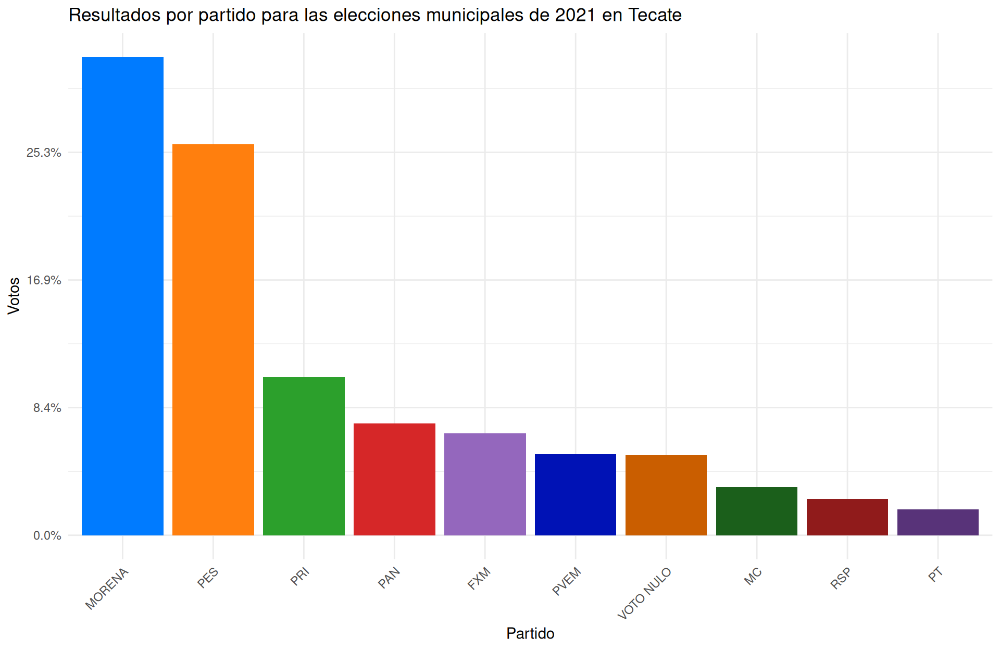

Resultados de elecciones en Baja California
Obtener los resultados de la elección Municipal 2021 de Baja California para el municipio de Tecate y Tijuana, además los resultados de las elecciones de Gubernatura más recientes para la entidad. Representar sus resultados a través de gráficas o mapas. En este ejercicio los datos deberán ser obtenidos de portales públicos.
Para esto consideraremos lso datos de las elecciones de Baja California para cada municipio y la elección de la gubernatura. Ambos datos los podemos encontrar en Elecciones_BajaCalifornia_Municipios.csv y Elecciones_BajaCalifornia_Gubernatura.csv respectivamente.
municipios <- read_csv("Elecciones_BajaCalifornia_Municipios.csv") #Leemos los datos
tecate <- municipios %>% filter(MUNICIPIO == "TECATE") #Filtramos los datos para Tecate
tijuana <- municipios %>% filter(MUNICIPIO == "TIJUANA") #Filtramos los datos para TijuanaComo queremos ver los resultados por partido, podemos agrupar el total de votos que obtuvo cada partido para cada municipio. Para esto, podemos sumar los votos de cada partido en cada municipio y representarlos en una gráfica de barras. Además también filtramos y eliminamos los partidos que no obtuvieron votos. De esta manera los resultados se ven expuestos en la siguiente grafica considerando solo los 10 partidos con mas votos:
#Resultados por partido en Tecate
resultados_tecate <- data.frame(PARTIDO = c(colnames(tecate)[5:15],colnames(tecate)[21:30]),
VOTOS = c(sapply(5:15,function(x){sum(tecate[,x])}),
sapply(21:30,function(x){sum(tecate[,x])})))
resultados_tecate <- resultados_tecate %>% arrange(desc(VOTOS)) %>% head(10)
ggplot() + geom_bar(data = resultados_tecate, aes(x = reorder(PARTIDO, -VOTOS),
y = VOTOS), fill = PALETA, stat = "identity") +
theme(axis.text.x = element_text(angle = 45, hjust = 1)) +
labs(title = "Resultados por partido para las elecciones municipales de 2021 en Tecate",
x = "Partido", y = "Votos") +
scale_y_continuous(labels = scales::percent_format(scale = 100/sum(resultados_tecate$VOTOS)))
De manera similar, podemos hacer lo mismo para los resultados en Tijuana considerando solo los 10 partidos con mas votoss
resultados_tijuana <- data.frame(PARTIDO = c(colnames(tijuana)[5:15],colnames(tijuana)[21:30]),
VOTOS = c(sapply(5:15,function(x){sum(tijuana[,x])}),
sapply(21:30,function(x){sum(tijuana[,x])})))
resultados_tijuana <- resultados_tijuana %>% arrange(desc(VOTOS)) %>% head(10)
ggplot() + geom_bar(data = resultados_tijuana, aes(x = reorder(PARTIDO, -VOTOS),
y = VOTOS), fill = PALETA, stat = "identity") +
theme(axis.text.x = element_text(angle = 45, hjust = 1)) +
labs(title = "Resultados por partido para las elecciones municipales de 2021 en Tijuana",
x = "Partido", y = "Votos") +
scale_y_continuous(labels = scales::percent_format(scale = 100/sum(resultados_tijuana$VOTOS)))Por otro lado para los datos de las elecciones de gubernatura, podemos considerar solo a los 10 partidos con mas votos en la elección
gubernatura <- read_csv("Elecciones_BajaCalifornia_Gubernatura.csv")
votos_gubernatura <- data.frame(PARTIDO = colnames(gubernatura)[5:25],
VOTOS = sapply(5:25,function(x){sum(gubernatura[,x])}))
votos_gubernatura <- votos_gubernatura %>% arrange(desc(VOTOS)) %>% head(10)
ggplot(data = votos_gubernatura) + geom_bar(mapping = aes(x = reorder(PARTIDO, -VOTOS),
y = VOTOS), fill = PALETA, stat = "identity") +
theme(axis.text.x = element_text(angle = 45, hjust = 1)) +
labs(title = "Resultados por partido en la elección de Gubernatura 2021", x = "Partido", y = "Votos", fill = NULL) +
scale_y_continuous(labels = scales::percent_format(scale = 100/sum(votos_gubernatura$VOTOS)))